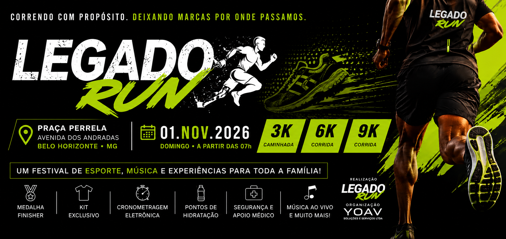
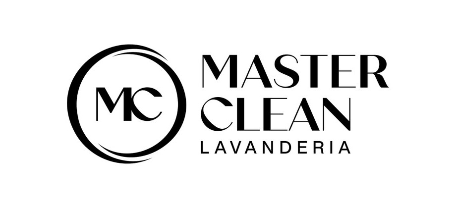
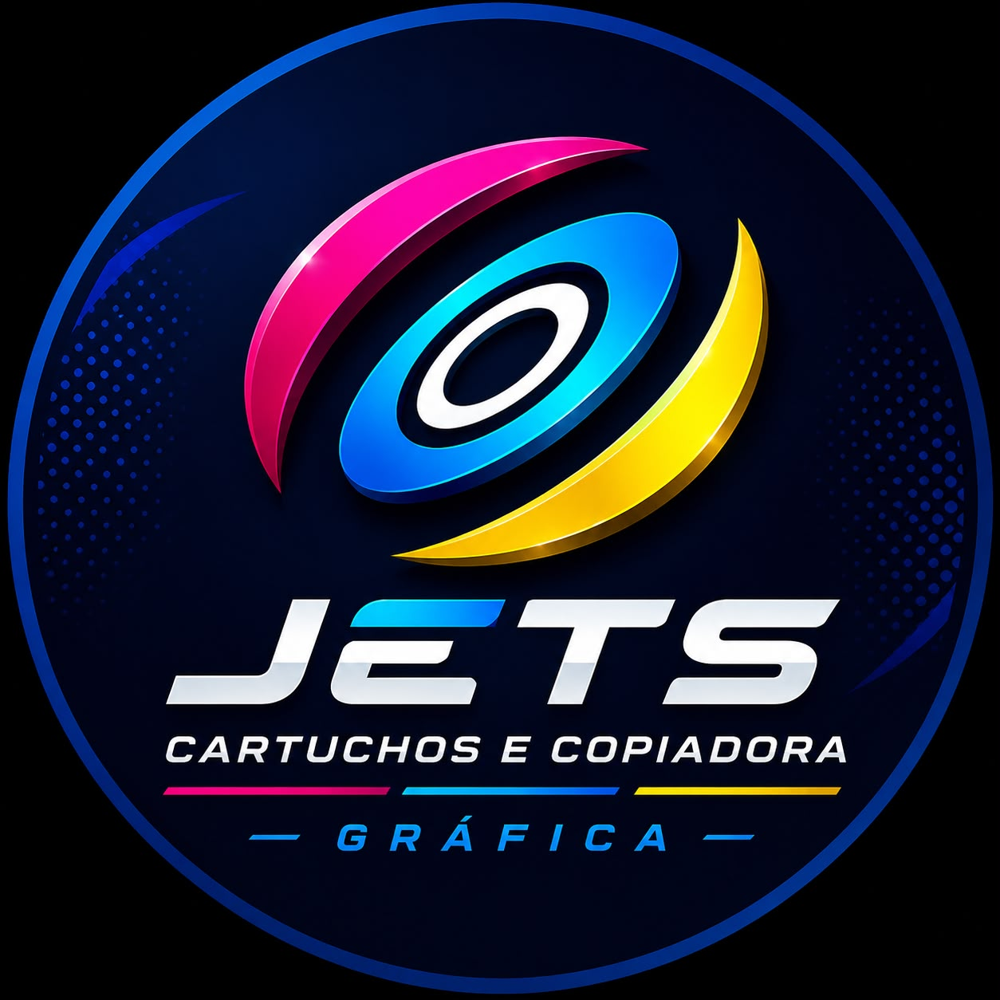

1ª Corrida LEGADO RUN
01/11/2026
Sua marca correndo ao lado de pessoas que acreditam em saúde, propósito e transformação.
Faça parte da 1ª Corrida LEGADO RUN e conecte sua empresa a uma experiência esportiva, social e comunitária em Belo Horizonte.
O evento
O LEGADO RUN nasce como movimento esportivo e social, não apenas como uma corrida isolada.
O LEGADO RUN nasce para incentivar pessoas a iniciarem ou fortalecerem uma vida ativa, saudável e conectada a um propósito. A primeira corrida oficial reunirá atletas, famílias, parceiros e comunidade em uma experiência esportiva na Avenida dos Andradas, em Belo Horizonte.
O projeto conecta saúde e bem-estar, combate ao sedentarismo, ocupação positiva dos espaços públicos, integração comunitária, incentivo à corrida e à caminhada, e relacionamento real entre marcas e pessoas.
Indicadores do projeto
Números apresentados como previsão ou estimativa, sem tratar projeções como resultado alcançado.
Perfil do público esperado
Pessoas conectadas a esporte, saúde, família e qualidade de vida.
Corredores iniciantes
Corredores experientes
Praticantes de caminhada
Frequentadores de academias
Jovens e adultos
Famílias
Pessoas interessadas em saúde
Moradores de Belo Horizonte e região metropolitana
Informações demográficas detalhadas poderão ser atualizadas conforme o avanço das inscrições.
Por que patrocinar?
Uma marca ganha valor quando aparece em uma experiência positiva, presencial e memorável.
O patrocínio conecta sua empresa a pessoas em movimento, conteúdos reais e relações que continuam depois da prova.
Jornada de exposição da marca
A presença do patrocinador acontece antes, durante e após o evento.
Campanha nas redes sociais, landing page, divulgação dos parceiros, materiais promocionais, vídeos, publicações e entrega de kits.
Arena, palco, locução, pórtico, sinalização, ativações, materiais dos atletas e cobertura em tempo real.
Publicação de fotos e vídeos, agradecimento institucional, relatório de entrega, conteúdo pós-evento e registro das marcas.
Percurso e arena
Praça Perrella, Avenida dos Andradas, Belo Horizonte/MG.
A arena prevê largada, chegada, palco, hidratação, área médica e espaços de ativação. O mapa público do percurso já está disponível; croqui detalhado, pontos de hidratação e áreas operacionais serão atualizados conforme confirmação da organização.
3 km caminhada
6 km corrida
9 km corrida
Ver mapa do evento
Programação oficial
Horários base da experiência no dia 01/11/2026.
Kit do atleta
Itens previstos para compor a experiência do participante.
Camisa oficial, número de peito, medalha, sacola, brindes de parceiros e produtos de hidratação ou reposição conforme confirmação. Itens não confirmados serão tratados como previsão, não como entrega garantida.
Ativações de marca
O patrocinador pode criar experiências, não apenas expor logotipo.
As ações deverão ser previamente alinhadas com a organização e compatíveis com as autorizações e regras do evento.
Estande promocional
Degustação
Distribuição de brindes
Aferição de pressão
Avaliação física
Massagem e recuperação
Hidratação
Experiências interativas
Fotos e vídeos
Sorteios
Exposição de produtos
Captação de contatos com consentimento
Patrocinadores e parceiros confirmados
Empresas que já decidiram caminhar com o LEGADO RUN.

Master Clean LavanderiaMarca confirmada entre as empresas que acreditaram no movimento desde a primeira edição.

JETS Cartuchos e Copiadora GráficaEmpresa confirmada como patrocinadora do evento LEGADO RUN.
Disponibilidade das cotas
Vagas limitadas por categoria, com atualização conforme fechamento comercial.
1 vaga disponívelDisponível
2 vagas disponíveisDisponível
4 vagas disponíveisDisponível
1 confirmada · 5 disponíveisMaster Clean confirmada
8 vagas disponíveisDisponível
Cotas de patrocínio
Cotas confirmadas e disponíveis para empresas que querem estar presentes desde a primeira edição.
Empresa Fundadora MasterR$ 15.0001 vaga
- Destaque máximo em toda comunicação
- Logo na camisa, número do atleta e pórtico
- Espaço premium na arena e direito de ativação
- Banco de fotos e vídeos oficiais
Empresa Fundadora DiamanteR$ 10.0002 vagas
- Logo grande em camisa, número e banner
- Instagram, site e landing page
- Stand 3x3, ativação e distribuição de brindes
- Vídeo oficial, fotos oficiais e locução
Empresa Fundadora OuroR$ 6.0004 vagas
- Logo média na camisa
- Banner, Instagram e landing page
- Stand e distribuição de brindes
- Fotos oficiais
Empresa Fundadora PrataR$ 3.5001 confirmada · 5 disponíveis
- Master Clean Lavanderia confirmada como Empresa Fundadora Prata
- Logo em materiais selecionados
- Banner, Instagram e landing page
- Stand compartilhado
Empresa Fundadora BronzeR$ 2.0008 vagas
- Logo institucional
- Instagram e landing page
- Banner coletivo
Tabela comparativa
Resumo das principais entregas por nível de parceria.
| Benefício | Master | Diamante | Ouro | Prata | Bronze | Apoio |
|---|---|---|---|---|---|---|
| Logo na camisa | Destaque máximo | Grande | Média | Conforme material | — | — |
| Logo no pórtico | Sim | Sim | — | — | — | — |
| Espaço para ativação | Premium | 3x3 m | Stand | Compartilhado | — | Conforme apoio |
| Divulgação digital | Alta | Destaque | Inserções | Inserções | Institucional | Conforme apoio |
| Backdrop / fotos | Destaque | Destaque | Médio | Coletivo | Coletivo | Conforme apoio |
| Entrega de brindes | Sim | Sim | Sim | Conforme alinhamento | — | Sim |
Documentos comerciais
Materiais para análise e reunião com a organização.
Solicitar apresentação comercial
Solicitar proposta de patrocínio
Regulamento em definição
Visualizar percurso oficial
Solicitar reunião
Galeria
Registros reais e materiais oficiais disponíveis até o momento.
Organização e credibilidade
Informações oficiais para reduzir dúvidas e facilitar a análise da empresa patrocinadora.
LEGADO RUN
Movimento esportivo que conecta corrida, caminhada, saúde, comunidade e propósito.
Matheus Philippe Silva de Oliveira
Idealizador do projeto LEGADO RUN.
YOAV Soluções e Serviços Ltda.
Empresa gestora responsável por planejamento, produção e relacionamento comercial.
E-mail: legadorunn@gmail.com
WhatsApp: (31) 99954-7699
Instagram: @LEGADORUN
CNPJ: 60.502.538/0001-26
Cidade: Belo Horizonte/MG
Realização: YOAV Soluções e Serviços Ltda.
Formulário comercial
Conte para nós qual parceria faz sentido para sua empresa.
Perguntas frequentes
Dúvidas comuns antes de construir uma parceria.
É possível personalizar uma proposta?
Sim. As contrapartidas podem ser ajustadas conforme segmento, objetivos e investimento.
Podemos apoiar com produtos?
Sim. Apoios em produtos, serviços ou estrutura serão avaliados conforme aderência à experiência.
Existe exclusividade por segmento?
Pode ser negociada nas cotas superiores e nas propriedades especiais, conforme disponibilidade.
Como é formalizada a parceria?
Por proposta comercial e contrato, com definição de investimento, entregas, prazos e responsabilidades.
A empresa pode ativar na arena?
Sim, conforme cota escolhida, espaço disponível e aprovação prévia da organização.
Os valores podem ser parcelados?
Condições comerciais podem ser avaliadas pela organização conforme cota, prazo e disponibilidade.
Convite final
Sua empresa pode fazer parte da primeira edição da história do LEGADO RUN.
Fale com a organização para entender disponibilidade, ativação e melhor formato comercial.
Quero construir esse legado
Falar pelo WhatsApp
E-mail: legadorunn@gmail.com
WhatsApp: (31) 99954-7699
Instagram: @LEGADORUN